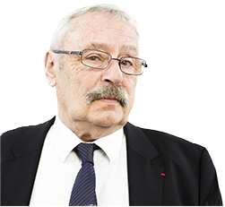
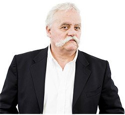

Analyse, stratégie et relations sociales
Ressources Humaines, Management, Organisation
Résonances est la réunion de trois personnalités, Henri Vacquin, Didier Morfoisse, Dominique Legrand
qui ont regroupé leurs expériences et leurs expertises pour proposer une offre large et diversifiée.
PRESENTATION
Pourquoi ça résonne ?
Les mutations du travail, nous les avons vécues depuis quarante ans, en acteurs ou en observateurs de l’éclatement de la collectivité de travail. Dans le même temps se faisaient jour des exigences de plus en plus fortes de résultats individuels et collectifs. Nous avons eu à gérer la traduction de ce morcellement en termes d’employabilité et de licenciements.
Eclatement de la collectivité de travail, des statuts des salariés : à l’entreprise qui résonnait de tous ses métiers et compétences a succédé de nombreux cercles qui résonnent de moins en moins ensemble et dans lesquels le sens du collectif se dissout.
De cette période nous avons appris qu’il ne faut pas contrer les évolutions du monde du travail mais les accompagner dans un projet commun à la fois managérial et social.
Ces quarante années passées résonnent dans les solutions que nous vous proposerons. Resserrer le champ conventionnel, l’adapter aux nouveaux statuts des relations du travail, imaginer de nouvelles formes de contrat social, sont l’écho de nos expériences passées.
Nous avons acquis notre expérience à l’aune des changements qu’il nous a été donné d’accompagner. De l’enrichissement des tâches des années 70, aux rapprochements des lieux de décisions de ceux où les tâches sont exécutées, de la participation, des prémices de la GPEC à l’individualisation des relations de travail, nous avons connus les difficultés du management à sortir du travail prescrit.
Nous n’avons, en outre, pas traversés ces décennies sans nous départir de la nécessité de conduire le changement et de façonner le management en lien étroit avec les relations sociales. La négociation, le rôle des partenaires sociaux, la gestion des conflits, ont fabriqué notre expérience du social en entreprise.
C’est aussi parce que nous savons « d’où vient l’entreprise » que nous pouvons « savoir où on en est » et vous conseiller utilement.
CHAMP DE COMPETANCES
NOTRE EXPERTISE
-
Dialogue social

Organisation et conditions de travail
-
Accompagnement individuel
-
Médiation
-
Accompagnement du changement
LA RÉUNION DE TROIS PERSONNALITÉS
L'équipe
Henri Vacquin, sur le terrain du management et des analyses des conflits du travail depuis les années 70, apporte la mémoire indispensable à la réflexion sociale et sociétale et une expérience reconnue dans les grandes entreprises et l’univers de la représentation (syndicat de salariés et d’employeurs).
Dominique Legrand et Didier Morfoisse apportent chacun quarante ans d’expérience du management des ressources humaines et plus généralement des comportements humains face au rapport de travail qu’il soit individuel ou collectif.
Professionnels du social réel de l’entreprise, ils ont pratiqué dans des univers très variés, privés et publics, français et internationaux. Consultants, managers opérationnels, médiateurs ils vous accompagneront dans vos projets collectifs, qu’il s’agisse de réorganisation, de restructuration, de mobilisation de vos équipes, en veillant à associer toutes les parties prenantes.
Ce sont des généralistes dont les personnalités et les compétences sont complémentaires qui ont décidé d’unir leurs capacités pour mener au mieux votre projet de changement, qu’il s’agisse de votre projet d’entreprise, de l’animation de votre comité de direction, de vos accords avec vos partenaires sociaux ou encore de votre politique de mobilisation et de communication interne avec la communauté des salariés.
Persuadés que seule une vue d’ensemble et une large palette de spécialisations RH les permet de mener un projet d’entreprise et une politique du changement, ils ont conçu Résonances en réseau afin d’être en mesure de répondre au plus près de votre besoin et vous offrir une réactivité immédiate.
Ils fondent leur intervention dans votre entreprise sur l’analyse du réel, le respect et l’écoute de tous, conditions essentielles de l’adhésion.
-

Henri Vacquin
Stratégie sociale et ressources humaines Elaboration et conduite de projets d’entreprise et de politiques du changement Médiateur certifié « Resolvers », Président de l’Association Nationale des Médiateurs, Coaching de dirigeants. Recrutement
EN SAVOIR + -

Didier Morfoisse
Stratégie sociale et ressources humaines Elaboration et conduite de projets d’entreprise et de politiques du changement Médiateur certifié « Resolvers », Président de l’Association Nationale des Médiateurs, Coaching de dirigeants. Recrutement
EN SAVOIR + -

Dominique Legrand
Stratégie sociale, accompagnement de la négociation, médiation de conflits du travail, organisation et conduite du changement, gestion des ressources humaines, communication, coaching, recrutement
EN SAVOIR +
NOTRE EXPÉRIENCE
Ils nous ont fait confiance
NOTRE EXPÉRIENCE
Clins d'œil
… En lisant les nôtres, nous parions qu’ils résonneront en vous !
S'appuyer sur tous les reseaux locaux,na jamais les prendres par surprise
TRAVAILLER EN SYNERGIE
Réseau
Cabinets spécialisés avec lesquels nous avons pour habitude de travailler :
BILLETS D'HUMEUR
Actualités

18 avril 2016
Le dévoilement du travail, une heureuse apocalypse
Henri Vacquin
27 octobre 2015
De quoi la chemise de Xavier est-elle le nom ?
Didier Morfoisse